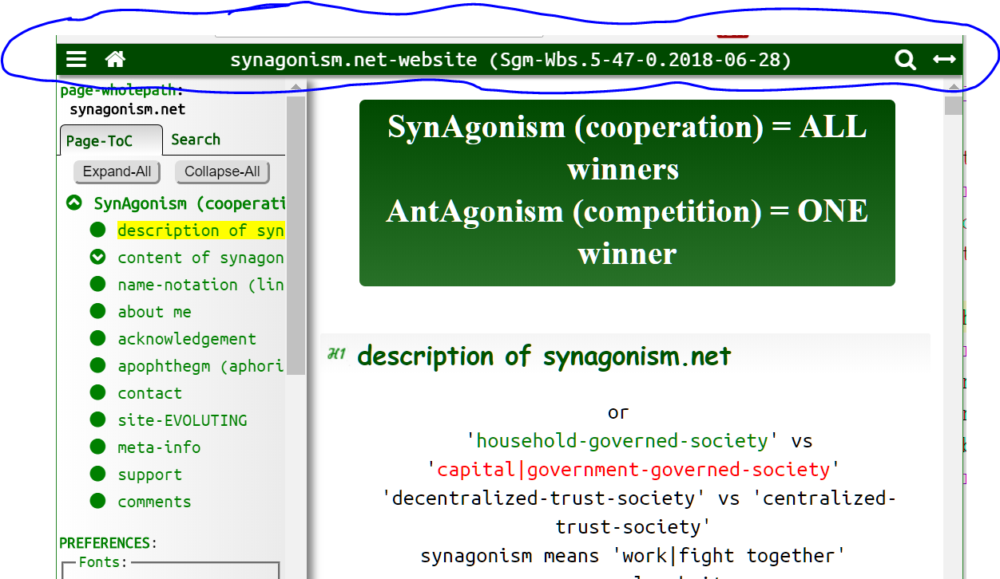
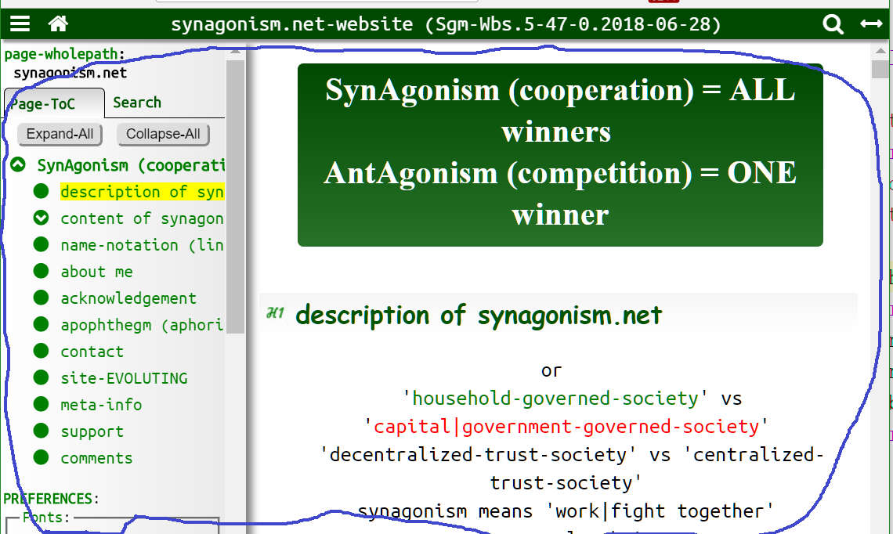
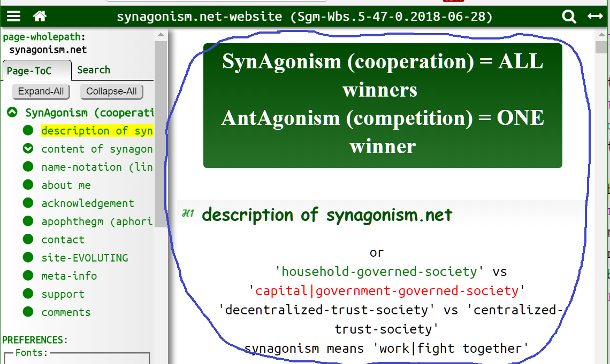
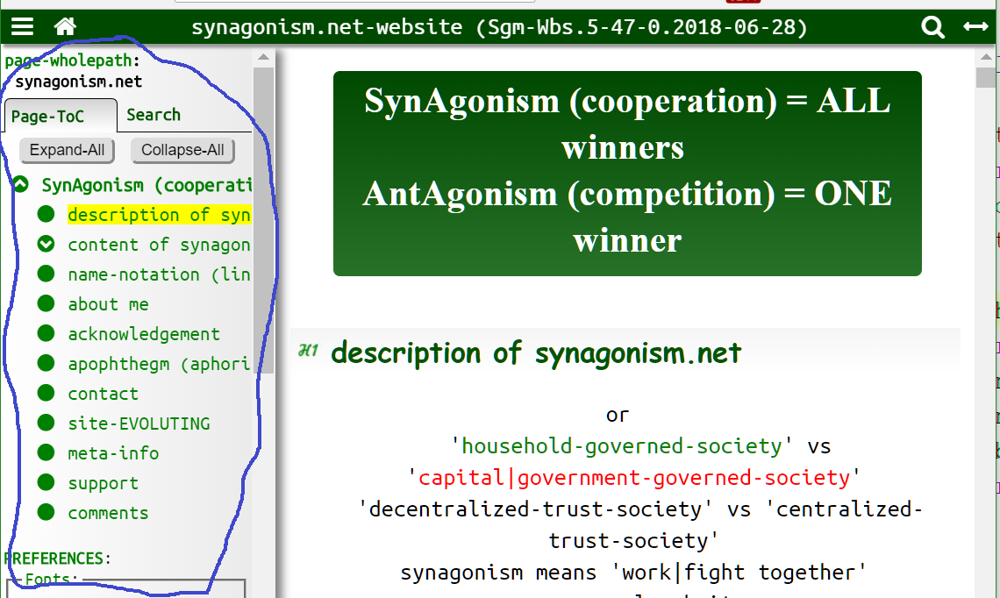
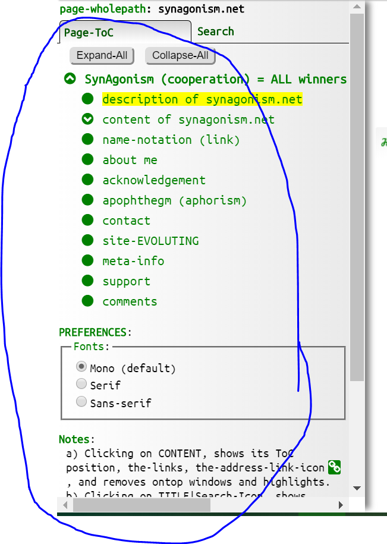
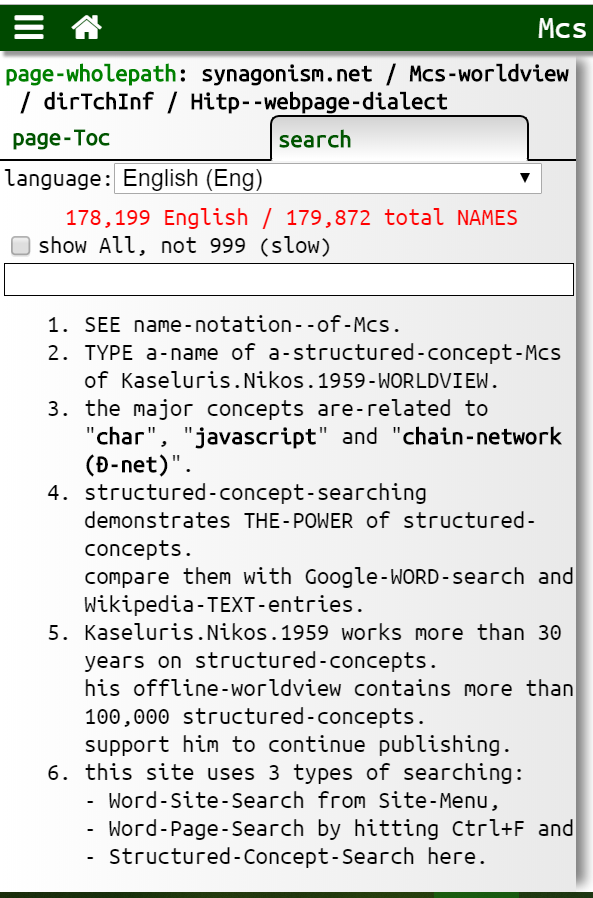
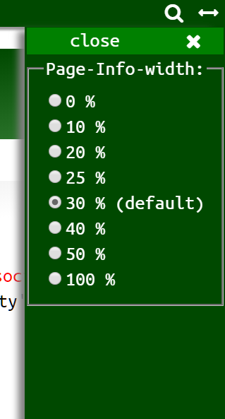
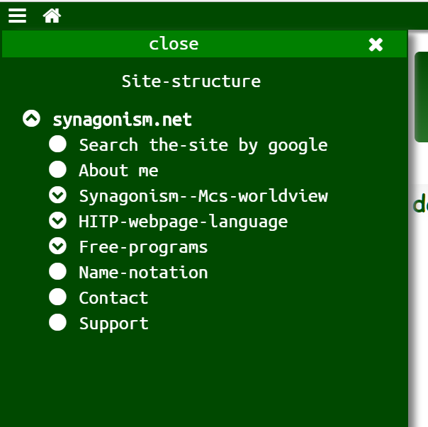
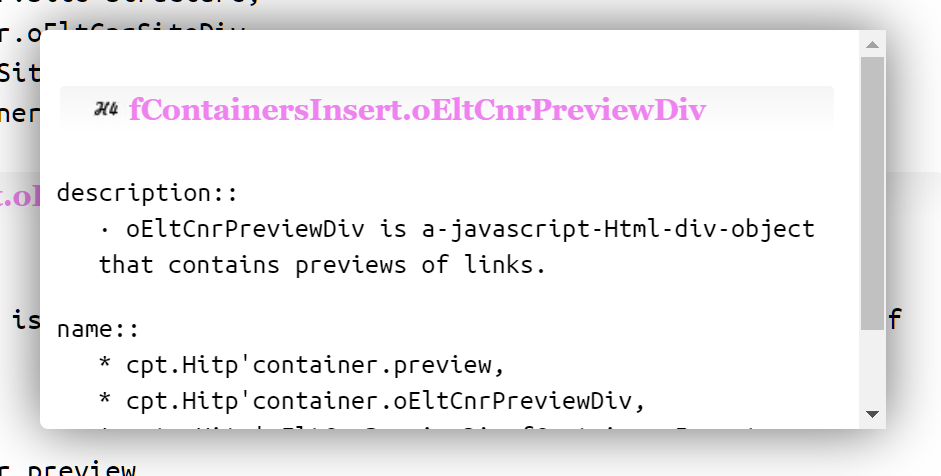

overview of Hitp
description::
Hitp (html5.id.toc.preview) is a-WEBPAGE-Html-Css-JS-DIALECT (format|method|framework) for publishing
WEBPAGES of title-content-tree structured-documents with these advantages:
1) Html5: no need for special programs to read them, as all machines have the needed browser (= html reader). Also html5-elements structure the-text for humans and machines.
2) Id: anyone can-refer to ANY PART of them, because all their html-elements have IDs.
3) Toc: automatically created expandable table-of-contents makes reading EASY.
4) Preview: same domain link-preview makes reading FAST.
With these attributes and by connecting the-NAMES of the-sentences with their DEFINITIONS using preview-links, we can-create our electronic-documents subjectively MONOSEMOUS, easily readable by humans and machines.
Knowledge of Html, Css, Browser-javascript is a-must to read the-rest of this page.
Artificial-intelligence will never succeed to understand today's POLYsemous unstructured-info[1] (only a portion of it will manage), for the simple fact it[1] is polysemous and some times ZEROsemous (= meaningless)!!!
The-creation of MONOsemous-structured-documents is a-prerequisite to manage the enormous quantity of human-information with the-help of machines.
name::
* Mcs.generic-specific-pair--webpage!⇒Hitp, {2013.09.01}
* Mcs.Hitp,
* Mcs.Hitp-(Html5.Id.Toc.Preview)!⇒Hitp,
* Mcs.Hitp-dialect!⇒Hitp,
* Mcs.Hitp-language!⇒Hitp,
* Mcs.Hitp--web-language!⇒Hitp, {2018-10-27}
* Mcs.Hitp--web-page-format!⇒Hitp,
* Mcs.Hitp--webpage-format!⇒Hitp,
* Mcs.Hitp--webpage-dialect!⇒Hitp,
* Mcs.Hitp--webpage-application-format!⇒Hitp,
* Mcs.Hitp--page-format!⇒Hitp,
* Mcs.Html5IdTocPreview!⇒Hitp,
* Mcs.Html5.id.toc.preview!⇒Hitp,
* Mcs.Html5.id.toc.preview--webpage-format!⇒Hitp,
* Mcs.Html5.id.toc.preview--page-format!⇒Hitp,
* Mcs.Html5IdTocPreview--webpage-format!⇒Hitp,
* Mcs.title-content-tree--document---webpage-format!⇒Hitp,
archetype of Hitp
description::
Archetype is the-entity we want to model with a-language.
A-Hitp-archetype is a-document (= recorded information) with a title-content-tree structure.
name::
* Mcs.archo-doc-of-Hitp!⇒Hitp'archo,
* Mcs.archodoc-of-Hitp!⇒Hitp'archo,
* Mcs.document-archetype--of-Hitp!⇒Hitp'archo,
* Mcs.Hitp'archetype!⇒Hitp'archo,
* Mcs.Hitp'archetype'title-content-tree-document!⇒Hitp'archo,
* Mcs.Hitp'archetype-document!⇒Hitp'archo,
* Mcs.Hitp'archo, {2019-02-21}
* Mcs.Hitp'archo-doc!⇒Hitp'archo,
* Mcs.Hitp'structured-document!⇒Hitp'archo,
* Mcs.Hitp-archo!⇒Hitp'archo!⇒Hitp'archo,
* Mcs.title-content-document--of-Hitp!⇒Hitp'archo,
* Mcs.title-content-tree-document--of-Hitp!⇒Hitp'archo,
Hitp-archo'title-content-tree--document
definition.recursive::
START-CONDITION:
A-title-content-tree-document is a-document with a-whole-part-tree--structure of
1) INFO-TITLE: the-parent-node and
2) INFO-CONTENT: an order-set of info-doc-units and part title-content-tree--docs (subtree-docs), the-children-nodes.
END-CONDITION:
Leaf-title-content-tree--docs consist of 1) a-title and 2) an order-set of info-doc-units.
name::
* Mcs.document.title-content-tree,
* Mcs.Hitp'archo'title-content-tree--document,
* Mcs.Tctd,
* Mcs.title-content-tree--document,
part::
• title,
• content,
• node,
• level,
• depth,
specific::
• bottom-tree,
• leaf-tree,
• root-tree,
• subtree,
TCTree-doc.BOTTOM
Definition.specific::
Bottom-tree is a-tree whose content contains bottom-nodes.
name::
* Mcs.Hitp'archo'bottom-tree,
* Mcs.Hitp'archo'tree.bottom,
* Mcs.title-content-tree--document.bottom,
TCTree-doc.LEAF
Definition.specific::
Leaf-tree is a-tree whose content contains only doc-units.
name::
* Mcs.Hitp'archo'tree.leaf,
* Mcs.Hitp'archo'leaf-tree,
* Mcs.title-content-tree--document.leaf,
TCTree-doc.ROOT
Definition.specific::
Root-tree is the outermost tree in a-title-content-tree-document.
Its title, the-root-title, has no parent.
name::
* Mcs.Hitp'archo'tree.root,
* Mcs.Hitp'archo'root-tree,
* Mcs.title-content-tree--document.root,
TCTree-doc.SUBTREE
Definition.specific::
Subtree is a-tree which is part of the-content of another tree.
name::
* Mcs.Hitp'archo'tree.subtree,
* Mcs.Hitp'archo'subtree,
* Mcs.title-content-tree--document.subtree,
Hitp-archo'title
description::
An-archo-title is text (a-name or a-phrase) that describes an-archo-content.
Sometimes, a-title is generic-information and a-content specific.
name::
* Mcs.Hitp'archo'info-title,
* Mcs.Hitp'archo'title,
* Mcs.title-content-tree--document'title,
Hitp-archo'title.Root
description::
Root-title is-called the outermost title-node in the-archetype-tree.
name::
* Mcs.Hitp'archo'root-title,
* Mcs.Hitp'archo'root-node,
* Mcs.title-content-tree--document'title.root,
Hitp-archo'content
description::
Archo-content[1] is the-children of an-archo-title.
It[1] is an order-set of doc-units and title-content-tree--docs.
name::
* Mcs.Hitp'archo'info-content,
* Mcs.Hitp'archo'content,
* Mcs.title-content-tree--document'content,
Hitp-archo'doc-unit
description::
Hitp-archo-unit is
- a-paragraph-with-sentences: an order-set of sentences, or
- a-paragraph-with-subparagraphs: an order-set of group of sentences separated with empty lines, or
- a paragraph-with-nonsentences: a-paragraph plus images, audios, videos, lists, tables, trees.
name::
* Mcs.Hitp'archo'info-doc-unit,
* Mcs.Hitp'archo'doc-unit,
* Mcs.title-content-tree--document'doc-unit,
Hitp-archo'node
description::
The-nodes of the-archo-tree are of two types: archo-doc-units or archo-titles.
name::
* Mcs.Hitp'archo'node,
specific::
• ancestor-node,
• bottom-node,
• child-node,
• descendant-node,
• leaf-node,
• parent-node,
• root-node,
• sibling-node,
• top-node,
Archo-node'number
description::
Every node has 2 numbers that denote its distance from the-top (root) and the-bottom of the-tree.
name::
* Mcs.Hitp'archo'number-of-node,
* Mcs.Hitp'archo'node-number,
* Mcs.Hitp'number-of-archo-node,
specific::
• root-number-of-node,
• bottom-number-of-node,
Archo-node'number.ΒΟΤΤΟΜ
description::
Bottom-number of a-node is its distance from the-bottom.
The-bottom-node has 0 bottom-number.
The-root-node has the-highest bottom-number.
name::
* Mcs.Hitp'archo'bottom-number-of-node,
* Mcs.Hitp'archo'node-bottom-number,
* Mcs.Hitp'height-number-of-archo-node,
* Mcs.Hitp'bottom-number-of-archo-node,
Archo-node'number.ROOT
description::
Root-number of a-node is its distance from the-top (root).
The-root has 0 root-number.
A-bottom-node has the-highest root-number.
name::
* Mcs.Hitp'archo'root-number-of-node,
* Mcs.Hitp'archo'node-root-number,
* Mcs.Hitp'depth-number-of-archo-node,
* Mcs.Hitp'root-number-of-archo-node,
Archo-node.BOTTOM
description::
Bottom-node is a-node with the-highest root-number.
name::
* Mcs.Hitp'archo'bottom-node,
* Mcs.Hitp'archo'node.bottom,
Archo-node.LEAF
description::
Leaf-node is a-node without children.
name::
* Mcs.Hitp'archo'leaf-node,
* Mcs.Hitp'archo'node.leaf,
Hitp-archo'level
description::
Level-of--Hitp-archetype is the-set of nodes with the-same number.
name::
* Mcs.Hitp'archo'level,
Hitp-archo'depth|height
description::
Depth|height-of--Hitp-archetype is the-number of its levels.
name::
* Mcs.Hitp'archo'depth,
* Mcs.Hitp'archo'height,
Hitp-archo'table-of-contents
description::
Archetype-table-of-contents is a-whole-part-tree with nodes the-titles of the-archo-doc.
name::
* Mcs.Hitp'archo'table-of-contents,
* Mcs.Hitp'archo'Toc,
document of Hitp (webpage)
description::
A-Hitp-webpage (Hitp-doc) is A-DOCUMENT which maps|represents|denotes|models an-archo-title-content-tree-doc.
It is structured for humans and machines.
It contains and extra information apart of the archo-doc representation, such as meta-info and site-info.
It is-written in 3 computer-languages, because it is a-web-application:
• Html: for the-structure of the-information,
• Css: for its presentation,
• Browser-javascript (Ljb): for its processing.
The-Html-doc is the most whole container which includes the-Css-doc and the-Ljb-doc.
[HmnSgm.2017-09-23]
name::
* Mcs.Hitp'page!⇒Hitp-page, {2019-02-23}
* Mcs.Hitp'webpage!⇒Hitp-page, {2019-02-21}
* Mcs.Hitp-code!⇒Hitp-page,
* Mcs.Hitp-doc!⇒Hitp-page,
* Mcs.Hitp-model!⇒Hitp-page,
* Mcs.Hitp-page, {2019-06-15}
* Mcs.Hitp-webpage!⇒Hitp-page,
Hitp-page'browser-compatibility
description::
• Hitp-docs are-tested on modern {2016} browsers on win10: Chrome, Firefox, Safari, Edge, IE11.
name::
* Mcs.Hitp'browser-compatibility,
* Mcs.Hitp'browser-support,
* Mcs.Hitp-page'browser-compatibility,
Hitp-page'download
name::
* Mcs.Hitp'download,
* Mcs.Hitp-page'download,
* Mcs.Hitp-download,
GitHub-site:
Since version.10.2014-08-05.valuenames I published the-code on GitHub.
• https://github.com/synagonism/hitp/.
To use the online files, use the-latest-files on the-project-page on GitHub.
• https://synagonism.github.io/hitp/hitp.html.
• https://synagonism.github.io/hitp/hitp.css.
• https://synagonism.github.io/hitp/hitp.js.
Synagonism-site:
• Hitp.16.2017-06-05.Searching,
• Hitp.15.2016-10-27.any-machine,
• Hitp.14.2016-06-09.title-content-tree,
• Hitp.12.2016-01-24.Toc-icons,
• Hitp.11.2015-10-26.preferences,
• Hitp.10.2014-08-05.valuenames,
• Hitp.08.2014-01-09.Toc,
• Hitp.07.2013-11-06.tabs,
• Hitp.05.2013-07-15.Toc-algo,
• Hitp.04.2013-06-27.html5.id.toc.preview,
• Hitp.03.2013-04-14.preview,
• Hitp.02.2013-04-01.Toc,
• Hitp.01.2011-02-17.html5.id,
Hitp-page'file
Every Hitp-webpage is comprised of:
• one Html-file the main container,
• one Css-file,
• one Ljb-file,
• one optional directory with all other needed files such as pictures, audio, video, Css, etc.
The-name of the-directory is the-same with the-name of the-html-file plus the '.files' extension.
name::
* Mcs.Hitp'file, {2019-02-23}
* Mcs.Hitp'syntax-tree!⇒Hitp'file,
* Mcs.Hitp-page'file!⇒Hitp'file,
* Mcs.Hitp-file!⇒Hitp'file,
specific::
* Html-file,
* Css-file,
* javascript-file,
* config.json,
* filSite-structure.html,
=== McsHitp:
* namidx.root.json,
* namidx.lagEng00.json,
* namidx.lagEng01.json, ...
Hitp-page'directory
description::
Optionally, the-Hitp-doc has a-directory with all extra files needed such as images, specific Css or Ljb code, anything.
Its name is the-name of the-Hitp-Html-file plus '.files'.
name::
* Mcs.Hitp'directory,
* Mcs.Hitp-directory,
* Mcs.Hitp-page'directory,
Hitp-page'style
description::
· the-style of a-page is-created mainly with the-Hitp-Css-doc, with html-elements and the-javascript-doc.
name::
* Mcs.Hitp-page'style!⇒Hitp-style,
* Mcs.Hitp-style, {2019-06-15}
Hitp-style.TEXT
name::
* Mcs.Hitp-style.text,
* Mcs.Hitp--text-style,
text-style.LINE
name::
* Mcs.Hitp--text-style.line,
text-style.line.THROUGH
description::
· with the-Html-element <del>.
name::
* Mcs.Hitp--text-style.line.through,
Hitp-page'Html-doc
description::
The-Html-language models the-structure of a-Hitp-webpage and stores the-content of the-archo-doc.
The-Html-doc is the most whole CONTAINER of the-webpage.
It contains the-Css-doc and the-Ljb-doc.
name::
* Mcs.Hitp'Html, {2019-02-21}
* Mcs.Hitp'Html-code!⇒Hitp'Html,
* Mcs.Hitp'Html-doc!⇒Hitp'Html,
* Mcs.Hitp-page'Html-doc!⇒Hitp'Html,
* Mcs.Html-code--of-Hitp!⇒Hitp'Html,
* Mcs.Html-doc--of-Hitp!⇒Hitp'Html,
* Mcs.Hitp-Html!⇒Hitp'Html,
Hitp-Html'Html5
description::
We use the-Html5-elements section, header, footer to create the-parts of a-Hitp-page that maps a-title-content-tree-doc.
name::
* Mcs.Hitp'Html'Html5,
* Mcs.Hitp'Html5,
* Mcs.Hitp-Html5,
Hitp-Html'title-content-tree--document
description::
A-Hitp--title-content-tree-document maps an-archo-title-content-tree--document.
We use the section, header, footer and p Html-elements to create Hitp-docs.
name::
* Mcs.Hitp'title-content-tree--document,
* Mcs.Hitp'Html'title-content-tree--document,
* Mcs.Hitp-Tctd,
part::
• title-of-Hitp-tree,
• content-of-Hitp-tree,
• doc-unit-of-Hitp-tree,
specific::
• footer-tree,
• header-tree,
• meta-tree,
• p-tree,
• root-tree,
• section-tree,
Hitp-Tctd.ROOT (header)
description::
A-Hitp-root-tree (a-Hitp-doc) maps|represents an-archo-root-tree (a-title-content-tree-doc).
We use a-header and an-h1 elements to create the-title, and an-ordered-set of h1-trees with last a-footer-tree to create the-content of the-root-tree.
The-header-element is the first child of the-body-element.
<header id="idHeader">
<h1 id="idHeaderH1">Title
</h1>
</header>
<section id="idName">
<h1 id="idNameH1">Title
</h1>
content
</section>
<footer id="idFooter">
<p id="idFooterP1">Title:
doc-units
</p>
</footer>
name::
* Mcs.Hitp-Tctd.header,
* Mcs.Hitp-header-tree,
* Mcs.Hitp-Tctd.root,
* Mcs.Hitp-root-tree,
* Mcs.Hitp-document.root,
* Mcs.Hitp-doc.root,
Depth:
The biggest depth of a-Hitp-doc is 6+1.
This is because the-heading-elements h1 ... h6 are 6 and thus a-section-tree can have only 5 subtrees.
The extra depth we get from p-trees.
PROPOSAL: Because many documents use deeper depth than 7 (even-though I do-not-think it is a good practice) I proposed on {2010.10.24} in public-html-comments@w3.org list to use all the single-digit numbers 0-9 as html-headings.
Hitp-Tctd.SECTION
description::
A-section-tree is a-tree in which we use the-section-element as a-container, a-heading-element for its title and for its content, doc-units or other section-trees.
The-subtrees of a-section-tree have ordered titles in the form h1, h2, h3, h4, h5, and h6.
<section id="idName2">
<h2 id="idName2H2">Title2
</h2>
<p>Sentence1.
Sentence2.
</p>
<section id="idName3">
<h3 id="idName3H3">Title3
</h3>
<p>Sentence1.
Sentence2.
</p>
</section>
</section>
name::
* Mcs.Hitp-Tctd.section,
* Mcs.Hitp-section-tree,
specific::
• h1-section-tree (has h1-element as title),
• h2-section-tree (has h2-element as title),
• h3-section-tree (has h3-element as title),
• h4-section-tree (has h4-element as title),
• h5-section-tree (has h5-element as title),
• h6-section-tree (has h6-element as title),
Hitp-Tctd.FOOTER
description::
A-Hitp-footer-tree is an optional special tree, last child of the-root-tree.
It is-created with the-footer-element, with no title, and content document-units with text that ends the-text of the-doc.
<footer id="idFooter">
<p id="idFooterP1">Title:
doc-units
</p>
</footer>
name::
* Mcs.Hitp-Tctd.footer,
* Mcs.Hitp-footer-tree,
Hitp-Tctd.P
description::
A-Hitp-p-tree is always a-leaf-tree we create with the-p-element.
Its-title is the first line which ends with ':'.
Its-content contains only doc-units.
<p id="idName">Title:
sentences or subparagraphs
</p>
//or
<div id="idName">
<p>Title:
Sentence1.
Sentence2.
</p>
<table>
...
</table>
</div>
name::
* Mcs.Hitp-Tctd.p,
* Mcs.Hitp-p-tree,
Hitp-Tctd.Meta
description::
A-webpage-meta-tree is a special section-tree, which is NOT PART of the-root-tree.
It contains meta-info about the-doc such as versions, comments, support etc.
<section id="idMeta">
<h1 id="idMetaH1">Meta-Info
</h1>
content.meta
<p id="idMetaWebpage_path"><span class="clsB clsColorGreen">page-wholepath</span>:
Hitp-webpage
∈ synagonism.net
</p>
</section>
name::
* Mcs.Hitp-Tctd.meta,
* Mcs.Hitp-meta-tree,
Hitp-Html'title
description::
A-Hitp-title maps an-archo-title[1].
We use the-heading-elements (h1, h2, ... h6) to implement it[1]:
<h1 id="idName">title</h1>
or the first line of a-p-element ending with '::'
<p id="idName">title::
doc-unit
</p>
name::
* Mcs.Hitp'title,
* Mcs.Hitp'webpage-title,
* Mcs.Hitp'Html'title,
Hitp-Html'doc-unit
description::
A-Hitp-doc-unit maps an-archo-doc-unit.
It is-created with p-elements and inline elements, or we use a-div-element as a-container if and extra block elements like ol, ul, table create the-doc-unit.
name::
* Mcs.Hitp'Html'doc-unit,
* Mcs.Hitp'Html'document-unit,
* Mcs.Hitp'Html'unit,
specific::
• paragraph-with-sentences-doc-unit,
• paragraph-with-subparagraphs-doc-unit,
• paragraph-with-nonsentences-doc-unit,
Hitp-Html-unit.Paragraph-with-sentences
description::
For readability, we put every sentence in a new line.
<p id="idName">Sentence1.
Sentence2.
SentenceLast.
</p>
name::
* Mcs.Hitp-Html-unit.paragraph-with-sentences,
* Mcs.Hitp-Html-unit.sentences,
* Mcs.Hitp'sentences-Html-doc-unit,
Hitp-Html-unit.Paragraph-with-subparagraphs
description::
<p id="idName">Sentence1.
Sentence2.
Sentence3.
SentenceLast.
</p>
name::
* Mcs.Hitp-Html-unit.paragraph-with-subparagraphs,
Hitp-Html-unit.Paragraph-with-nonsentences
description::
<div id="idName">
<p>Sentence1.
Sentence2.
</p>
<table>
...
</table>
<a class="clsHide" href="#idName"></a></div>
name::
* Mcs.Hitp-Html-unit.paragraph-with-nonsentences,
* Mcs.Hitp-Html-unit.nonsentences,
* Mcs.Hitp'nonsentences-Html-doc-unit,
Hitp-Html'file
description::
The-html-file is the main file of the-webpage.
It is the most whole CONTAINER of all files of the-webpage.
See the-example-file on github.
name::
* Mcs.Html-file--of-Hitp,
* Mcs.Hitp'file.Html,
* Mcs.Hitp'Html'file,
Hitp-Html'IDs
description::
The core concept (and first motive) of our-proposal is the-addition of ID-attributes on all elements of a-Hitp-page.
For example:
<h1 id="idXxxx">...
<p id="idYyyy">...
Now we can-refer to any part of the-document!!!
name::
* Mcs.Hitp'id, {2019-02-24}
* Mcs.Hitp'Html'id!⇒Hitp'id,
* Mcs.Hitp-id!⇒Hitp'id,
The-IDs must-be unique:
You can-use as ID whatever you want.
We sugest to begin with "id" in-order to be-distinguished from other words in the-text and do-not-contain spaces.
For example:
id, idHeader, idHitpidx-income, ...
ID-Patterns:
If the-author of a-doc uses patterns to write the-IDs of a-text-file, it helps the-reader to quickly identify the-parts of the-file.
Examples:
- idA4 (article)
- idA4P2 (paragraph)
- idP2 (Part)
- idP2C2 (Chapter)
NOTATION::
the-ID of a-heading-element is the-ID of its section-element plus H1, H2, etc.
This way we can-link and preview the-part of the-doc with this heading.
address-link-icon of Hitp
description::
· the-IDs must-be visible to the-reader:
· the-reader, in-order to REFER to any part of the-document, must-know the-ID of this part of the-file.
· this can-be-done by adding a hidden element in this part of the-file that will-be-visible when we want to see it and not disturbing our text.
· but if this hidden-element is and a-link-element, then the-reader could-copy the-address of this part of the-file from the-address-bar of his browser.
· here is an-example of the simple code we have to add to reach our goal.
<p id="idYyyy">...
<a class="clsHide" href="#idYyyy"></a></p>
· with this code, when the-reader clicks|taps on content, at the-end of the clicked doc-unit appears the-ADDRESS-LINK-ICON.
· clicking on this icon, s|he can-see the-ID of this text and s|he can-copy from the-address-bar the-address of this particular part of the-text.
· the-paragraph you are-reading now has the-feature we are-talking about and you can-experiment with it.
· we can-set IDs, if we need them, on every SENTENCE in a-paragraph.
name::
* Mcs.Hitp'address-link-icon,
* Mcs.Hitp'id'address-link-icon,
Hitp-Html'links
description::
By setting IDs in all elements of a-text, we can-refer to any part of a-document.
Then we can-use links in all places in a-text we refer to another place inside a-document or outside of it.
Law-texts are full of references.
Find the-references it is difficult and sometimes impossible.
If the-references are "one click away", then reading law will become easier.
name::
* Mcs.Hitp'link,
* Mcs.Hitp'Html'link,
* Mcs.Hitp-link,
Hitp-Html'math-formulas
name::
* Mcs.Hitp'math,
* Mcs.Hitp'Html'math,
* Mcs.Hitp-math,
description::
Using MathJax we can-have "beautiful math in all browsers". For example:
HOW:
1. we need to add the following code:
<script src="https://cdnjs.cloudflare.com/ajax/libs/mathjax/2.7.4/MathJax.js?config=TeX-MML-AM_CHTML" async></script> and
2. create the-math-code. An easy method is from the online site ShareMath.
Hitp-page'Css-doc
description::
The-Css-language models the-presentation of the-archo-doc.
We use a-Css-file[1] for harmonization in the-appearance of documents and for the-Toc creation.
You need the following code, inside the-Html-doc, to use it[1]:
<link rel="stylesheet" href="https://synagonism.github.io/hitp/hitp.css">
You can-store the-hitp.css-file AND in your server.
Also you can modify the-appearance of the-document by using AND your own Css-file.
name::
* Mcs.Hitp'Css-doc!⇒Hitp'Css,
* Mcs.Hitp'Css, {2019-02-21}
* Mcs.Hitp-page'Css-doc!⇒Hitp'Css,
* Mcs.Hitp-Css!⇒Hitp'Css,
Hitp-Css'class
description::
· like the-IDs, the-name of all Css-classes begin with 'cls'.
name::
* Mcs.Hitp'class-of-Css!⇒Hitp-cls,
* Mcs.Hitp'cls!⇒Hitp-cls, {2019-02-28}
* Mcs.Hitp'cls-of-Css!⇒Hitp-cls,
* Mcs.Hitp'Css'class!⇒Hitp-cls,
* Mcs.Hitp-Css'class!⇒Hitp-cls,
Css-class.clsHide
description::
· this class is-used to display the-links[a] on every element that[a] contain the-address of the-element.
name::
* Mcs.Hitp-cls.clsHide,
* Mcs.Hitp'clsHide,
Css-class.clsPreview
description::
· links with this class, display a-preview of their info and with a second click go to that location.
name::
* Mcs.Hitp-cls.clsPreview,
* Mcs.Hitp'clsPreview,
Css-class.clsClicked
description::
· this class is-added on the-Html-elements clicked by the-user and adds misc functionality:
- display the-address-link-icons.
- add color on the-links in the clicked element.
name::
* Mcs.Hitp-cls.clsClicked,
* Mcs.Hitp'clsClicked,
Css-class.clsTocExpand
description::
· if this class is-present on idMetaWebpage_path paragraph, then when the-page is-opened the-Toc is-expanded.
name::
* Mcs.Hitp-cls.clsTocExpand,
* Mcs.Hitp'clsTocExpand,
Css-class.paperbook-page
description::
· it is-used on span-elements to display the-number of a-page of a-paper-book in Hitp-format.
name::
* Mcs.Hitp-cls.paperbook-page,
* Mcs.Hitp'clsPagePb,
Hitp'clsPagePb {
display: block;
text-align: right;
color: green;
}
Css-class.CENTER
name::
* Mcs.Hitp'center-text,
* Mcs.Hitp-cls.center,
* Mcs.Hitp'clsCenter,
Hitp'clsCenter {
text-align: center;
}
Hitp'clsCenterBlock {
display: block;
margin-left: auto;
margin-right: auto;
}
Hitp'clsCenterInline {
display: block;
text-align: center;
}
Css-class.BUTTON
name::
* Mcs.Hitp'button-class,
* Mcs.Hitp-cls.button,
* Mcs.Hitp'clsBtn,
Hitp'clsBtn {
border-radius: 5px;
font-size: 12px;
margin: 2px 0 5px 12px;
}
Hitp'clsBtn:hover {
background: #e0f2f7;
color: red;
}
Css-class.COLOR
name::
* Mcs.Hitp'color-classes,
* Mcs.Hitp-cls.color,
* Mcs.Hitp'clsColor,
Hitp'clsColorBlue {
color: #0000ff;
}
Hitp'clsColorGreen {
color: #008000;
}
Hitp'clsColorGreenBg {
background-color: #008000;
}
Hitp'clsColorRed {
color: #ff0000;
}
Hitp'clsColorYellow {
color: #FFFF00;
}
Hitp'clsColorYellowBg {
background-color: #FFFF00;
}
Css-class.FONT
name::
* Mcs.Hitp'font-classes,
* Mcs.Hitp-cls.font,
* Mcs.Hitp'clsFont,
Hitp'clsFontGrExt {
font-family: "Palatino Linotype";
}
Hitp'clsFontGrMg {
font-family: MgPolNewTimes;
font-size: 16px;
}
Hitp'clsFontSerif {
font-family: Serif, "Times New Roman", Georgia;
}
Hitp'clsFontSansserif {
font-family: SansSerif, "Microsoft Sans Serif", Arial, Dialog, Tahoma;
}
Hitp'clsFontMonospaced {
font-family: Monospaced, "Courier New", Courier;
}
Hitp'clsFontScript {
font-family: Script "Monotype Corsiva";
}
Hitp'clsFontDecorative {
font-family: Wingdings;
}
Css-class.SIZE
name::
* Mcs.Hitp'size-of-font,
* Mcs.Hitp-cls.size,
* Mcs.Hitp'clsSize,
Hitp'clsSizeSmall {
font-size: small;
}
Hitp'clsSizeSmallX {
font-size: x-small;
}
Hitp'clsSizeMedium {
font-size: large;
}
Hitp'clsSizeLarge {
font-size: large;
font-weight: bold;
}
Hitp'clsSizeLargeX {
font-size: x-large;
font-weight: bold;
}
Css-class.BIU
name::
* Mcs.Hitp'bold-class,
* Mcs.Hitp'italic-class,
* Mcs.Hitp'underline-class,
* Mcs.Hitp-cls.bold,
* Mcs.Hitp-cls.italic,
* Mcs.Hitp-cls.underline,
* Mcs.Hitp'clsB,
* Mcs.Hitp'clsBU,
* Mcs.Hitp'clsI,
* Mcs.Hitp'clsU,
Hitp'clsB {
/* use strong element, not this */
font-weight: bold;
}
Hitp'clsBU {
font-weight: bold;
text-decoration: underline;
}
Hitp'clsI {
font-style: italic;
}
Hitp'clsU {
text-decoration: underline;
}
Hitp-Css'file
description::
The-Css-doc has 3 files.
The-hitp.css, main file, and 2 font files, filFntUbuntuMonoRegular.ttf and filIcnFa463.woff2 (Icons Font Awesome 4.6.3)
You can-download them from my-site, or from github:
- hitp.css,
- filFntUbuntuMonoRegular.ttf,
- filIcnFa463.woff2,
name::
* Mcs.Hitp'Css-file,
* Mcs.Hitp'Css'file,
* Mcs.hitp.css,
* Mcs.Hitp-file.Css,
Hitp-page'javascript-doc
description::
Browser-javascript-language models the-information processing on the-page.
- creates the-Toc and inserts it into the-page.
- makes the-width of Toc-container dynamic.
- adds preferences on the-page.
- adds the-site-structure.
- adds the-page-path.
- ...
name::
* Mcs.Hitp'browser-javascript-doc!⇒Hitp'Ljb,
* Mcs.Hitp'javascript-doc!⇒Hitp'Ljb,
* Mcs.Hitp'JS-doc!⇒Hitp'Ljb,
* Mcs.Hitp'Ljb, {2019-02-21}
* Mcs.Hitp'Ljb-code!⇒Hitp'Ljb,
* Mcs.Hitp'Ljb-doc!⇒Hitp'Ljb,
* Mcs.Hitp-page'browser-javascript-doc!⇒Hitp'Ljb,
* Mcs.Hitp-page'javascript-doc!⇒Hitp'Ljb,
* Mcs.Hitp-page'JS-doc!⇒Hitp'Ljb,
* Mcs.Hitp-page'Ljb-doc!⇒Hitp'Ljb,
* Mcs.Hitp-Ljb!⇒Hitp'Ljb,
* Mcs.Hitp--Ljb-doc!⇒Hitp'Ljb,
* Mcs.javascript-code--of-Hitp!⇒Hitp'Ljb,
* Mcs.javascript-doc--of-Hitp!⇒Hitp'Ljb,
* Mcs.Ljb-code--of-Hitp!⇒Hitp'Ljb,
* Mcs.Ljb-doc--of-Hitp!⇒Hitp'Ljb,
Hitp-Ljb'file
description::
'hitp.js' is the-javascript-code you need to create a-Hitp-webpage.
It is part of the-Html-doc.
It is-included using the-script-element at the-end of the-body-element:
<script src="https://synagonism.github.io/hitp/hitp.js"></script>
You can-download this file, or use the online one.
So, hitp.html, hitp.css and hitp.js is the-code needed to create Hitp-pages, and it is free (MIT license).
name::
* Mcs.Hitp'file.javascript,
* Mcs.Hitp'file.Ljb,
* Mcs.Hitp'javascript-file,
* Mcs.Hitp'Ljb'file,
* Mcs.hitp.js,
Hitp-Ljb'API
description::
· a-Hitp-Ljb-document has an-API, like any programing-language document, with oHitp the-most-whole-object.
name::
* Mcs.API.Hitp,
* Mcs.Hitp'API,
* Mcs.Hitp'Ljb'API,
repository::
* https://github.com/synagonism/hitp,
* latest: https://github.com/synagonism/hitp/tree/gh-pages,
oHitp
description::
oHitp is the-most-whole-object of the-Hitp-javascript-document.
name::
* Mcs.Hitp'API'oHitp!⇒oHitp,
* Mcs.Hitp'oHitp!⇒oHitp,
* Mcs.oHitp, {2019-02-24}
member::
// 16-5-0.2017-11-09 Object.getOwnPropertyNames(oHitp).sort().join(', ')
[bEdge, bFirefox, bSite, fContainersInsert, fObjvalRKey, fTocTriCreate, fTocTriHighlightNode, nCfgPageinfoWidth, oEltClicked, oTreeUl, sCfgHomeLocal, sQrAClk, sQrAClkLast, sVersion]
// Object.getOwnPropertyNames(oHitp.__proto__).sort().join(', ')
[__defineGetter__, __defineSetter__, __lookupGetter__, __lookupSetter__, __proto__, constructor, hasOwnProperty, isPrototypeOf, propertyIsEnumerable, toLocaleString, toString, valueOf]
oHitp.aNamidxRoot
description::
· aNamidxRoot is a-javascript-array that contains the-namidx.root.json if exists.
name::
* Mcs.Hitp'aNamidxRoot,
* Mcs.oHitp'aNamidxRoot,
oHitp.aSuggestions
description::
· aSuggestions is a-javascript-array-object that contains
the-name-index-file we are-reading each time we search for a-name.
· it is an oHitp member to have access to it from the-console.
name::
* Mcs.Hitp'aSuggestions,
* Mcs.oHitp'aSuggestions,
oHitp.aVersion
description::
· contains the-versions of hitp.js.
name::
* Mcs.Hitp'aVersion,
* Mcs.oHitp'aVersion,
oHitp.bEdge
description::
· boolean if the-runtime is the-Edge-browser.
name::
* Mcs.Hitp'bEdge,
* Mcs.oHitp'bEdge,
oHitp.bFirefox
description::
· boolean if the-runtime is the-Firefox-browser.
name::
* Mcs.Hitp'bFirefox,
* Mcs.oHitp'bFirefox,
oHitp.bSite
description::
· boolean if exists a-site-structure-menu.
name::
* Mcs.Hitp'bSite,
* Mcs.oHitp'bSite,
oHitp.fContainersInsert
description::
Creates new containers and inserts them in the-body-element:
- Top-cnr for title and menus.
- Main-cnr for page-info and page-content.
- Width-cnr for managing the-width of page-info.
- Site-cnr for containing the-site-strucute.
- Preview-cnr to display link-previews.
name::
* Mcs.Hitp'fContainersInsert,
* Mcs.oHitp'fContainersInsert,
bServer of fContainersInsert
description::
· bServer is a-boolean denoting if a-page is-running on a-webserver (online or local) or not.
name::
* Mcs.Hitp'bServer-of-fContainersInsert,
* Mcs.oHitp'bServer-of-fContainersInsert,
* Mcs.Hitp'fContainersInsert'bServer,
* Mcs.oHitp'fContainersInsert'bServer,
bMcs of fContainersInsert
description::
· bMcs is a-boolean denoting if the-webpage displays a-structured-concept-Mcs or not.
· we need it to display the-search-tab or not.
name::
* Mcs.Hitp'bMcs-of-fContainersInsert,
* Mcs.oHitp'bMcs-of-fContainersInsert,
* Mcs.Hitp'fContainersInsert'bMcs,
* Mcs.oHitp'fContainersInsert'bMcs,
fEvtClickContent of fContainersInsert
description::
· fEvtClickContent is a-click-event added to all content-Html-elements.
· highlights click position on table-of-contents.
· highlights links on click element.
· removes popup,
· removes previous highlighted links.
name::
* Mcs.Hitp'fEvtClickContent-of-fContainersInsert,
* Mcs.oHitp'fEvtClickContent-of-fContainersInsert,
* Mcs.Hitp'fContainersInsert'fEvtClickContent,
* Mcs.oHitp'fContainersInsert'fEvtClickContent,
fEvtMouseoverContent of fContainersInsert
description::
· fEvtMouseoverContent is a-mouseover-event added to all content-Html-elements.
· highlights mouseover position on table-of-contents.
name::
* Mcs.Hitp'fEvtMouseoverContent-of-fContainersInsert,
* Mcs.oHitp'fEvtMouseoverContent-of-fContainersInsert,
* Mcs.Hitp'fContainersInsert'fEvtMouseoverContent,
* Mcs.oHitp'fContainersInsert'fEvtMouseoverContent,
fEvtLink of fContainersInsert
description::
· fEvtLink adds click-events on the-links inside the Html-elemens we click.
name::
* Mcs.Hitp'fEvtLink-of-fContainersInsert,
* Mcs.oHitp'fEvtLink-of-fContainersInsert,
* Mcs.Hitp'fContainersInsert'fEvtLink,
* Mcs.oHitp'fContainersInsert'fEvtLink,
fEvtPreview of fContainersInsert
description::
· fEvtPreview is an-event-listener we add on clsPreview-links to show a-preview.
name::
* Mcs.Hitp'fContainersInsert'fEvtPreview,
* Mcs.Hitp'fEvtPreview-of-fContainersInsert,
* Mcs.oHitp'fContainersInsert'fEvtPreview,
* Mcs.oHitp'fEvtPreview-of-fContainersInsert,
fSearchSuggest of fContainersInsert
description::
· doing: suggests names of structured-concepts, that BEGIN with a-search-name.
· input: nothing or string of namidx to search: lagEng03si_2_0, root, ...
name::
* Mcs.Hitp'fSearchSuggest-of-fContainersInsert,
fSSNamidxDisplay of fSearchSuggest
description::
· doing: display names of a-namidx.
· input: sNamidxIn: lagEll01alfa, lagEng02bi, lagEng03si_0.
name::
* Mcs.Hitp'fSSNamidxDisplay,
* Mcs.oHitp'fSSNamidxDisplay,
fSSNamidxRefManage of fSearchSuggest
description::
· doing: decides what to do with a-reference-namidx.
· input: lagEng03si_0, lagEng03si_2_0.
name::
* Mcs.Hitp'fSSNamidxRefManage,
* Mcs.oHitp'fSSNamidxRefManage,
fSSNamidxRefDisplay of fSearchSuggest
description::
· doing: display names of a-reference-namidx, make them clickable, highligts first.
· input: sNamidxRefIn: lagEng03si_0, ..
name::
* Mcs.Hitp'fSSNamidxRefDisplay,
* Mcs.oHitp'fSSNamidxRefDisplay,
fSSNamidx_pathFind of fSearchSuggest
description::
· input: lagEng01ei, lagEll01alfa.
· output: site/dirMiwMcs/dirNamidx/dirLagEng/namidx.lagEng01ei.json.
name::
* Mcs.Hitp'fSSNamidx_pathFind,
* Mcs.oHitp'fSSNamidx_pathFind,
fSSEvtPreview of fSearchSuggest
description::
· doing: adds preview-event on links in search-sugestions and adds its text on search-input.
name::
* Mcs.Hitp'fSSEvtPreview,
* Mcs.oHitp'fSSEvtPreview,
fSSEscapeRs of fSearchSuggest
description::
· input: a-search-name string.
· output: the same string escaped (for '+' '.' '|' '(' '*') to use it as a-regexp without special chars.
name::
* Mcs.Hitp'fSSEscapeRs,
* Mcs.oHitp'fSSEscapeRs,
oEltBody of fContainersInsert
description::
· oEltBody-(body-container) is the-document.body-javascript-object representing the-Html-body-element of the-web-page.
name::
* Mcs.Hitp'body-container, {2019-02-24}
* Mcs.Hitp'oEltBody.fContainersInsert!⇒Hitp'body-container,
* Mcs.oHitp'oEltBody.fContainersInsert!⇒Hitp'body-container,
* Mcs.Hitp'fContainersInsert'oEltBody!⇒Hitp'body-container,
* Mcs.oHitp'fContainersInsert'oEltBody!⇒Hitp'body-container,
part::
* top-container,
* main-container,
oEltCnrTopDiv of fContainersInsert
description::
· oEltCnrTopDiv-(top-container) is a-javascript-Html-div-object that contains the-title of the-page plus the-icons of site, home, search and width.

name::
* Mcs.Hitp'body-container'top-container!⇒Hitp'top-container,
* Mcs.Hitp'container.top!⇒Hitp'top-container,
* Mcs.Hitp'container.oEltCnrTopDiv!⇒Hitp'top-container,
* Mcs.Hitp'page-title--bar!⇒Hitp'top-container,
* Mcs.Hitp'title-bar!⇒Hitp'top-container,
* Mcs.Hitp'title-container!⇒Hitp'top-container,
* Mcs.Hitp'top-container, {2019-02-24}
* Mcs.Hitp'oEltCnrTopDiv.fContainersInsert!⇒Hitp'top-container,
* Mcs.oHitp'oEltCnrTopDiv.fContainersInsert!⇒Hitp'top-container,
* Mcs.Hitp'fContainersInsert'oEltCnrTopDiv!⇒Hitp'top-container,
* Mcs.oHitp'fContainersInsert'oEltCnrTopDiv!⇒Hitp'top-container,
whole-chain::
* oEltBody,
oEltCnrMainDiv of fContainersInsert
description::
· oEltCnrMainDiv-(main-container) is a-javascript-Html-div-object that contains the-content of the-page and info about it.

name::
* Mcs.Hitp'body-container'main-container!⇒Hitp'main-container,
* Mcs.Hitp'container.main!⇒Hitp'main-container,
* Mcs.Hitp'container.oEltCnrMainDiv!⇒Hitp'main-container,
* Mcs.Hitp'main-container, {2019-02-24}
* Mcs.Hitp'oEltCnrMainDiv.fContainersInsert!⇒Hitp'main-container,
* Mcs.oHitp'oEltCnrMainDiv.fContainersInsert!⇒Hitp'main-container,
* Mcs.Hitp'fContainersInsert'oEltCnrMainDiv!⇒Hitp'main-container,
* Mcs.oHitp'fContainersInsert'oEltCnrMainDiv!⇒Hitp'main-container,
part::
* oEltCnrMainPgcntDiv,
* oEltCnrMainPginfDiv,
whole-chain::
* oEltBody,
oEltCnrMainPgcntDiv of fContainersInsert
description::
· oEltCnrMainPgcntDiv is a-javascript-Html-div-object that contains the-content of the-page.

name::
* Mcs.Hitp'container.content!⇒Hitp'content-container,
* Mcs.Hitp'container.oEltCnrMainPgcntDiv!⇒Hitp'content-container,
* Mcs.Hitp'content-container, {2019-02-24}
* Mcs.Hitp'main-container'content!⇒Hitp'content-container,
* Mcs.Hitp'oEltCnrMainPgcntDiv.fContainersInsert!⇒Hitp'content-container,
* Mcs.oHitp'oEltCnrMainPgcntDiv.fContainersInsert!⇒Hitp'content-container,
* Mcs.Hitp'fContainersInsert'oEltCnrMainPgcntDiv!⇒Hitp'content-container,
* Mcs.oHitp'fContainersInsert'oEltCnrMainPgcntDiv!⇒Hitp'content-container,
oEltCnrMainPginfDiv of fContainersInsert
description::
· oEltCnrMainPginfDiv-(the-info-container) is a-javascript-Html-div-object that contains information about the-page such as table-of-contents and search tabs.

name::
* Mcs.Hitp'container.page-info!⇒Hitp'info-container,
* Mcs.Hitp'container.oEltCnrMainPginfDiv!⇒Hitp'info-container,
* Mcs.Hitp'info-container, {2019-02-23}
* Mcs.Hitp'main-container'info!⇒Hitp'info-container,
* Mcs.Hitp'page-info-container!⇒Hitp'info-container,
* Mcs.Hitp'oEltCnrMainPginfDiv.fContainersInsert!⇒Hitp'info-container,
* Mcs.oHitp'oEltCnrMainPginfDiv.fContainersInsert!⇒Hitp'info-container,
* Mcs.Hitp'fContainersInsert'oEltCnrMainPginfDiv!⇒Hitp'info-container,
* Mcs.oHitp'fContainersInsert'oEltCnrMainPginfDiv!⇒Hitp'info-container,
whole-chain::
* oEltCnrMainDiv,
whole-path-container of info-container
description::
· oEltPginfPathP is a-javascript-Html-p-object that contains the-whole-path of the-page, ie the-path of the-directories that contain this page.
· contains the-innerHTML of the-element with id=idMetaWebpage_path.
name::
* Mcs.Hitp'info-container'page-whole-path,
* Mcs.Hitp'page-whole-path--of--info-container,
* Mcs.Hitp'whole-path--of--info-container,
* Mcs.Hitp'oEltPginfPathP-of-fContainersInsert,
* Mcs.oHitp'oEltPginfPathP-of-fContainersInsert,
* Mcs.Hitp'fContainersInsert'oEltPginfPathP,
* Mcs.oHitp'fContainersInsert'oEltPginfPathP,
whole-chain::
* oEltCnrMainPginfDiv,
tabs of info-container
description::
· page-info-(oEltCnrMainPginfDiv) contains tabs with misc information.
· ALL Hitp-pages display the-table-of-contents-tab.
· anyone can-add his own tab.
· Hitp-Mcs contain and the-search-tab.
· to add a-tab you need to add code in 2 containers:
a) in tabs-headers (oEltPginfTabHeadersUl) you have to add the-title of the-tab as a-list-item-li.
b) in tabs-content (oEltPginfTabCntDiv) you have to add a-div-container with tab's information.
name::
* Mcs.Hitp'info-container'tabs,
* Mcs.Hitp'page-info'tabs,
* Mcs.Hitp'tabs-of-fContainersInsert,
* Mcs.Hitp'fContainersInsert'tabs,
* Mcs.oHitp'fContainersInsert'tabs,
* Mcs.oHitp'tabs-container--of-fContainersInsert,
whole-chain::
* oEltCnrMainPginfDiv,
oEltPginfTabHeadersUl of fContainersInsert
description::
· oEltPginfTabHeadersUl is a-javascript-Html-ul-object that contains the-headers of the-tabs we have inside the-page-info-container.
=== code
oEltPginfTabHeadersUl.innerHTML =
'page-Toc' +
'search'
name::
* Mcs.Hitp'fContainersInsert'oEltPginfTabHeadersUl,
* Mcs.Hitp'oEltPginfTabHeadersUl-of-fContainersInsert,
* Mcs.oHitp'oEltPginfTabHeadersUl-of-fContainersInsert,
* Mcs.oHitp'fContainersInsert'oEltPginfTabHeadersUl,
* Mcs.Hitp'tab-headers-container,
whole-chain::
* tabs-container,
oEltPginfTabCntDiv of fContainersInsert
description::
· oEltPginfTabCntDiv is a-javascript-Html-div-object that contain the-contents of the-tabs of the-page-info-container.
name::
* Mcs.Hitp'tab-content-container,
* Mcs.Hitp'oEltPginfTabCntDiv-of-fContainersInsert,
* Mcs.oHitp'oEltPginfTabCntDiv-of-fContainersInsert,
* Mcs.Hitp'fContainersInsert'oEltPginfTabCntDiv,
* Mcs.oHitp'fContainersInsert'oEltPginfTabCntDiv,
Toc-tab of info-container
description::
· ALL Hitp-pages contain a-table-of-contents-tab which displays the-table-of-contents of the-page, font preferences and notes on how to work with the-page.

name::
* Mcs.Hitp'info-container'Toc-tab,
* Mcs.Hitp'tab.Toc,
* Mcs.Hitp'Toc-tab,
part::
* oEltPginfTabHeadersUl,
* tabs-content-container,
* oEltTabCntTocDiv,
* oEltTabCntTocExpBtn,
* oEltTabCntTocCpsBtn,
* table-of-contents-tree,
* oEltTabCntTocPrfDiv,
* oEltTabCntTocNotP,
whole-chain::
* oEltCnrMainPginfDiv,
oEltTabCntTocDiv of fContainersInsert
description::
· oEltTabCntTocDiv is a-javascript-Html-div-object that contains the-content of the-Toc-tab.
name::
* Mcs.Hitp'Toc-content-container,
* Mcs.Hitp'oEltTabCntTocDiv-of-fContainersInsert,
* Mcs.oHitp'oEltTabCntTocDiv-of-fContainersInsert,
* Mcs.Hitp'fContainersInsert'oEltTabCntTocDiv,
* Mcs.oHitp'fContainersInsert'oEltTabCntTocDiv,
whole-chain::
* tabs-content-container,
oEltTabCntTocExpBtn of fContainersInsert
description::
· oEltTabCntTocExpBtn is a-javascript-Html-input-object that represents the-expand-all-button which holds the-click-event that expands all nodes of the-table-of-contents tree.
name::
* Mcs.Hitp'Toc-expand-all-button,
* Mcs.Hitp'oEltTabCntTocExpBtn-of-fContainersInsert,
* Mcs.oHitp'oEltTabCntTocExpBtn-of-fContainersInsert,
* Mcs.Hitp'fContainersInsert'oEltTabCntTocExpBtn,
* Mcs.oHitp'fContainersInsert'oEltTabCntTocExpBtn,
oEltTabCntTocCpsBtn of fContainersInsert
description::
· oEltTabCntTocCpsBtn is a-javascript-Html-input-object that represents the-collapse-all-button which holds the-click-event that collaps all nodes of the-table-of-contents tree.
name::
* Mcs.Hitp'Toc-collapse-all-button,
* Mcs.Hitp'oEltTabCntTocCpsBtn-of-fContainersInsert,
* Mcs.oHitp'oEltTabCntTocCpsBtn-of-fContainersInsert,
* Mcs.Hitp'fContainersInsert'oEltTabCntTocCpsBtn,
* Mcs.oHitp'fContainersInsert'oEltTabCntTocCpsBtn,
oEltTabCntTocPrfDiv of fContainersInsert
description::
· preferences-oEltTabCntTocPrfDiv is a-javascript-Html-div-object that contains a-fieldset-element with radio-buttons for a-user to choose the type of font s|he preferes to read the-page.
name::
* Mcs.Hitp'preferences,
* Mcs.Hitp'oEltTabCntTocPrfDiv-of-fContainersInsert,
* Mcs.oHitp'oEltTabCntTocPrfDiv-of-fContainersInsert,
* Mcs.Hitp'fContainersInsert'oEltTabCntTocPrfDiv,
* Mcs.oHitp'fContainersInsert'oEltTabCntTocPrfDiv,
oEltTabCntTocNotP of fContainersInsert
description::
· oEltTabCntTocNotP is a-javascript-Html-p-object with notes on how to read the-page.
name::
* Mcs.Hitp'oEltTabCntTocNotP-of-fContainersInsert,
* Mcs.oHitp'oEltTabCntTocNotP-of-fContainersInsert,
* Mcs.Hitp'fContainersInsert'oEltTabCntTocNotP,
* Mcs.oHitp'fContainersInsert'oEltTabCntTocNotP,
search-tab of info-container
description::
· Hitp-Mcs-pages contain and a-search-tab with an-input-field to write names of structured-concepts-Mcs we want to find and a-ol-Html-element to hold found names of concepts.

name::
* Mcs.Hitp'info-container'search-tab,
* Mcs.Hitp'tab.search,
* Mcs.Hitp'search-tab,
whole-chain::
* oEltCnrMainPginfDiv,
content-container of search-tab
description::
· oEltTabCntSrchDiv-(content-container) is a-javascript-Html-div-object that contains the-content of the-search-tab.
name::
* Mcs.Hitp'fContainersInsert'oEltTabCntSrchDiv,
* Mcs.Hitp'oEltTabCntSrchDiv-of-fContainersInsert,
* Mcs.Hitp'search-tab'content-container,
* Mcs.oHitp'fContainersInsert'oEltTabCntSrchDiv,
* Mcs.oHitp'oEltTabCntSrchDiv-of-fContainersInsert,
whole-chain::
* tabs-content-container,
language-label of search-tab
description::
· oEltTabCntSrchLbl-(language-label) is a-javascript-Html-label-object that contains the-'language:' label for the-language-list.
name::
* Mcs.Hitp'search-tab'language-label,
language-selection-list of search-tab
description::
· oEltTabCntSrchSlt-(language-selection-list) is a-javascript-Html-select-object that contains the-languages on which we want to search for a-name.
name::
* Mcs.Hitp'search-tab'language-selection-list,
number-of-suggestions-found of search-tab
description::
· oEltTabCntSrchP-(number-of-suggestions-found) is a-javascript-Html-p-element that contains the-number of names found.
· example content: 10 / 335 N..O / 178,215 English / 179,888 total NAMES
name::
* Mcs.Hitp'fContainersInsert'oEltTabCntSrchP,
* Mcs.Hitp'oEltTabCntSrchP-of-fContainersInsert,
* Mcs.Hitp'search-tab'number-of-suggestions-found-container,
* Mcs.oHitp'fContainersInsert'oEltTabCntSrchP,
* Mcs.oHitp'oEltTabCntSrchP-of-fContainersInsert,
checkbox of search-tab
description::
· oEltTabCntSrchLblChk-(checkbox) is a-javascript-Html-label-object that contains a-checkbox with the-'show All, not 999 (slow)' label
name::
* Mcs.Hitp'search-tab'checkbox,
input-text-box of search-tab
description::
· oEltTabCntSrchIpt-(input-text-box) is a-javascript-Html-input-object where a-user writes the-name of the-structured-concept-Mcs s|he wants to find.
· it has 2 event-listeners:
a) on keyup search for names begining with what is-written and
b) an-enter-event to go on highlighted name.
name::
* Mcs.Hitp'fContainersInsert'oEltTabCntSrchIpt,
* Mcs.Hitp'oEltTabCntSrchIpt-of-fContainersInsert,
* Mcs.Hitp'search-tab'input-text-box,
* Mcs.Hitp'search-text-box,
* Mcs.oHitp'fContainersInsert'oEltTabCntSrchIpt,
* Mcs.oHitp'oEltTabCntSrchIpt-of-fContainersInsert,
input-text-string of search-tab
description::
· search-name is the-name we write into the-search-text-box to find its concept.
name::
* Mcs.Hitp'search-name,
* Mcs.Hitp'search-tab'input-text-string,
suggestions-ordered-list of search-tab
description::
· oEltTabCntSrchOl-(suggestions-ordered-list) is a-javascript-Html-ol-object that contains search-suggestions.
· on arrow-down and arrow-up highlights next suggestions.
name::
* Mcs.Hitp'fContainersInsert'oEltTabCntSrchOl,
* Mcs.Hitp'oEltTabCntSrchOl-of-fContainersInsert,
* Mcs.Hitp'search-tab'suggestions-ordered-list,
* Mcs.oHitp'fContainersInsert'oEltTabCntSrchOl,
* Mcs.oHitp'oEltTabCntSrchOl-of-fContainersInsert,
whole-chain::
* tab-search-content-container,
oEltCnrWidthDiv of fContainersInsert
description::
· page-info-width-container-(oEltCnrWidthDiv) is a-javascript-Html-div-object that contains the-settings for the-width of the-page-info-container.

name::
* Mcs.Hitp'container.page-info-width,
* Mcs.Hitp'container.width,
* Mcs.Hitp'container.oEltCnrWidthDiv,
* Mcs.Hitp'fContainersInsert'oEltCnrWidthDiv,
* Mcs.Hitp'oEltCnrWidthDiv-of-fContainersInsert,
* Mcs.Hitp'width-container,
* Mcs.oHitp'fContainersInsert'oEltCnrWidthDiv,
* Mcs.oHitp'oEltCnrWidthDiv-of-fContainersInsert,
whole-chain::
* oEltBody,
oEltCnrSiteDiv of fContainersInsert
description::
· site-structure-container-(oEltCnrSiteDiv) is a-javascript-Html-div-object that contains the-site-structure-list.

name::
* Mcs.Hitp'container.site-structure,
* Mcs.Hitp'container.oEltCnrSiteDiv,
* Mcs.Hitp'fContainersInsert'oEltCnrSiteDiv,
* Mcs.Hitp'oEltCnrSiteDiv-of-fContainersInsert,
* Mcs.Hitp'site-structure--container,
* Mcs.oHitp'fContainersInsert'oEltCnrSiteDiv,
* Mcs.oHitp'oEltCnrSiteDiv-of-fContainersInsert,
whole-chain::
* oEltBody,
oEltCnrPreviewDiv of fContainersInsert
description::
· oEltCnrPreviewDiv is a-javascript-Html-div-object that contains previews of links.

name::
* Mcs.Hitp'container.preview,
* Mcs.Hitp'container.oEltCnrPreviewDiv,
* Mcs.Hitp'fContainersInsert'oEltCnrPreviewDiv,
* Mcs.Hitp'oEltCnrPreviewDiv-of-fContainersInsert,
* Mcs.Hitp'preview-container,
* Mcs.oHitp'fContainersInsert'oEltCnrPreviewDiv,
* Mcs.oHitp'oEltCnrPreviewDiv-of-fContainersInsert,
whole-chain::
* oEltBody,
oHitp.fObjvalRKey
description::
· utility-function, returns the-key of an-object, given its value.
name::
* Mcs.Hitp'fObjvalRKey,
* Mcs.oHitp'fObjvalRKey,
oHitp.fTocTriCreate
description::
Returns a string html-ul-element that holds the-Toc-tree with the-headings of the-page.
<ul id="idTocTri" class="clsTreeUl">
<li><a class="clsPreview" href="#idHeader">SynAgonism</a>
<ul>
<li><a href="#heading">heading</a><li>
<li><a href="#heading">heading</a><li>
</ul>
<li>
</ul>
name::
* Mcs.Hitp'fTocTriCreate,
* Mcs.oHitp'fTocTriCreate,
oHitp.fTocTriHighlightNode
description::
· Highlights ONE item in Toc-list
name::
* Mcs.Hitp'fTocTriHighlightNode,
* Mcs.oHitp'fTocTriHighlightNode,
oHitp.nCfgPageinfoWidth
description::
· config-variable which contains the-number of the-width of page-info-container.
· default 30.
name::
* Mcs.Hitp'nCfgPageinfoWidth,
* Mcs.oHitp'nCfgPageinfoWidth,
oHitp.oEltClicked
description::
· holds the-object of the-Html-element a-user clicks on.
name::
* Mcs.Hitp'oEltClicked,
* Mcs.oHitp'oEltClicked,
oHitp.oTreeUl
description::
· contains functionality to manage collapsible-trees, from unordered-lists with clsTreeUl.
name::
* Mcs.Hitp'oTreeUl,
* Mcs.oHitp'oTreeUl,
part::
* fTruCreate,
* fTruToggleLi,
* fTruTocCollapseAll,
* fTruTocExpandAll,
* fTruTocExpandFirst,
oTreeUl.fTruCreate
description::
· creates collapsible-trees the-Html-unorderd-lists with clsTreeUl.
· if input is a-javascript-object of an-Html-unorderd-list, then it creates one tree, the-input.
· in input is none, it creates all these lists to trees.
name::
* Mcs.Hitp'fTruCreate,
* Mcs.oHitp'oTreeUl.fTruCreate,
oTreeUl.fTruToggleLi
description::
· expands or collapses an input list-item.
name::
* Mcs.Hitp'fTruToggleLi,
* Mcs.oHitp'oTreeUl.fTruToggleLi,
oTreeUl.fTruTocCollapseAll
description::
· collapses all list-items of Toc-tree.
name::
* Mcs.Hitp'fTruTocCollapseAll,
* Mcs.oHitp'oTreeUl.fTruTocCollapseAll,
oTreeUl.fTruTocExpandAll
description::
· expands all list-items of Toc-tree.
name::
* Mcs.Hitp'fTruTocExpandAll,
* Mcs.oHitp'oTreeUl.fTruTocExpandAll,
oTreeUl.fTruTocExpandFirst
description::
· expands the-first list-item of Toc-tree.
name::
* Mcs.Hitp'fTruTocExpandFirst,
* Mcs.oHitp'oTreeUl.fTruTocExpandFirst,
oHitp.sCfgHomeLocal
description::
· config-variable, contains the-string of the-local-directory of the-site.
· example: /dirWstSgm/
name::
* Mcs.Hitp'sCfgHomeLocal,
* Mcs.oHitp'sCfgHomeLocal,
oHitp.sNamidx
description::
· sNamidx contains the-string of the-name-index-file we want to search for names.
· only the middle part eg 'root' for 'namidx.root.json' or 'lagEng02bi' for 'namidx.lagEng02bi.json'.
name::
* Mcs.Hitp'sNamidx,
* Mcs.oHitp'sNamidx,
oHitp.sPathSite
description::
· sPathSite contains the-path of a-Hitp-site:
- no-server: ''
- server.local: location.origin + oHitp.sCfgHomeLocal
- server.online: location.origin + '/'
name::
* Mcs.Hitp'sPathSite,
* Mcs.oHitp'sPathSite,
oHitp.sPathSitemenu
description::
· sPathSitemenu contains the-path of the-site-structure a-Hitp-site:
- no-server: ''
- server.local: location.origin + oHitp.sCfgHomeLocal + 'filSite-structureLocal.html'
- server.online: location.origin + '/' + 'filSite-structure.html'
name::
* Mcs.Hitp'sPathSitemenu,
* Mcs.oHitp'sPathSitemenu,
oHitp.sSrchCrnt
description::
· contains the-index we are-searching now, eg A, char.A, G, ...
· we display it at suggestions-found-container.
name::
* Mcs.Hitp'sSrchCrnt,
* Mcs.oHitp'sSrchCrnt,
oHitp.sSrchNext
description::
· contains the NEXT index from which we are-searching now, eg B, char.A, G, ...
· we display it at suggestions-found-container.
name::
* Mcs.Hitp'sSrchNext,
* Mcs.oHitp'sSrchNext,
oHitp.sQrslrAClk
description::
· selector for a-elements with clsClickCnt
name::
* Mcs.Hitp'sQrslrAClk,
* Mcs.oHitp'sQrslrAClk,
oHitp.sQrslrAClkLast
description::
· last selector for a-elements with clsClickCnt
name::
* Mcs.Hitp'sQrslrAClk,
* Mcs.oHitp'sQrslrAClk,
Hitp-Ljb'table-of-contents
description::
When you are-reading text on a-computer-screen you are-losing your reading-position.
Hitp-webpages automatically create the-table-of-contents-tree (Toc) of the-doc of the-page and show your reading-position.
HOW: you need to add the following code at the-end of the-body-element:
<script src="https://synagonism.github.io/hitp/hitp.js"></script>
The-attributes of Hitp-Toc are:
* It is expandable.
* There is two-way communication between the-Toc and the-content.
- By clicking on the-Toc, goes to that heading in the-content.
- By clicking|hovering on content, this content position is highlited in the-Toc and its parents are only expanded, giving to the-reader the big picture of the-position s|he is-reading.
Thus the-Toc improves the-readability of big documents.
* If the-user needs more space for the-content, the-splitbar has a-button that closes|opens the-Toc with one click.
* The-splitter changes width.
My previous approach was the-creation of a-Chrome-extension, my Table-of-contents-crx which creates a-Toc on any page with headings only in Chrome.
name::
* Mcs.Hitp'Ljb'table-of-contents,
* Mcs.Hitp'table-of-contents,
* Mcs.Hitp'Toc,
* Mcs.Hitp'Toc-tree,
whole-chain::
* oEltTabCntTocDiv,
description::
Another functionality that facilitates reading is the-addition of previews (pop-ups) on internal (same-origin) links with destination relatively small chunks of text.
This is especially useful for footnotes, abbreviations, definitions, index items, paragraphs etc.
HOW: you only have to add the-class 'clsPreview' on the-links you want to trigger popups when the-reader is hovering over them.
<a class="clsPreview" href="#idPreview">link-preview</a>
name::
* Mcs.Hitp'link-preview,
* Mcs.Hitp'Ljb'link-preview,
* Mcs.Hitp'popup,
* Mcs.Hitp'preview-functionality,
Hitp-Ljb'tree-info
description::
Our information is full of generic-specific and whole-part trees.
Now Hitp support collapsible trees, easily readable.
HOW:
You create the-tree as an-html-unordered-list (UL).
Then you add the-class 'clsTreeUl' on the first element.
That's it, the-rest is done by the javascript code of the-page.
name::
* Mcs.Hitp'info-tree,
* Mcs.Hitp'Ljb'info-tree,
* Mcs.Hitp'tree-info,
Hitp-page'writing-style
name::
* Mcs.Hitp'writing-style,
description::
Today, our information has MANY interpretations/meanings (= polysemous).
Hitp-pages can-reduce it, by accepting the-following writing-style.
Names:
We use the-name-notation-of-this-site.
No spaces inside names.
Definition-links:
The-names of the-sentences are-connected with preview-links with their definitions.
Sentences:
Every sentence begins in a new line, which improves readability.
Time:
{1959} denotes time.
Hitp-page'index
description::
Html5.id.toc.preview-pages improve the-functionality of the-indexes of documents because we have the-capability to refer|link, from the-index, to any part of the-text (because we use IDs) and preview these parts.
name::
* Mcs.Hitp'index,
* Mcs.Hitp-page'index!⇒Hitp'index,
* Mcs.Hitp-index!⇒Hitp'index,
concept-index
description::
Every text describes CONCEPTS.
The-concepts have NAMES.
Every SENTENCE in a-text is composed of names.
IF we create the-concept-index of a-text, with every concept-entry to hold its names and its definition, THEN we will-have ONE interpretation of the-meaning of a-text (= monosemous-text).
IF we set preview-linking on the-names of sentences with the-concept-index, THEN the-understanding of a-text will-become FAST.
name::
* Mcs.Hitp'concept-index,
* Mcs.Hitp'index.concept,
name-index
description::
Βy setting as ID on each name|term-entry the pattern "idHitpidx-term", the-reader will-have very quick access to the-entries.
un.sna.2008.html is an-example with a-name-index.
name::
* Mcs.Hitp'name-index,
* Mcs.Hitp'index.name,
word-index
name::
* Mcs.Hitp'index.word,
* Mcs.Hitp'word-index,
description::
The majority of programs today search a-text for words and NOT names.
By pressing Ctrl+F or F3 you can-search for words.
website of Hitp
description::
· Hitp-site is a-website with Hitp-pages.
name::
* Mcs.Hitp'site,
* Mcs.Hitp'website!⇒Hitp'site,
structure of Hitp-site (link)
configuring Hitp-site
description::
· when a-Hitp-page is-loaded, the-javascript-code first loads the-config.json-file, if exists.
· this file contains configuration-variables for the-site, such as:
- nCfgPageinfoWidth,
- sCfgHomeLocal,
name::
* Mcs.Hitp'configuring,
* Mcs.Hitp'site'configuring,
manager of Hitp
description::
· Hitp-manager is the-tools we use to manage (= write, read, publish, ...) Hitp-pages.
· for now {2019} I am-using editor, browser, ftp programs.
· but I want a-javascript-program like my-HtmlMgr written in java in {2010}.
name::
* Mcs.Hitp'manager,
* Mcs.Hitp-manager!⇒Hitp'manager,
problem of Hitp
name::
* Mcs.Hitp'issue,
* Mcs.Hitp'problem,
Links {2016.01.25}:
I implemented a-custom-event on clicking links, because of history problems in different browsers.
So Shift|Ctrl+click does-not-work.
WORKAROUND: right-click on a-link and choose the-command.
Firefox
location.href {2013.08.16}:
FIXED
In contrast to Chrome, Firefox loses selected-text after setting value on 'location.href'.
WORKAROUND: first click to go to that location and then select-text from this location.
Back-Forward {2013.08.16}:
FIXED.
Clicking on buttons 'back', 'forward' shows the visited locations but does not go to that location.
WORKAROUND: click on the-address-bar and hit enter.
DOING of Hitp
name::
* Mcs.Hitp'doing,
SEARCHING of Hitp
description::
· if a-Hitp-site contains name-index-files at 'dirMiwMcs/dirNamidx/', a-Hitp-page displays and a-search-tab from where a-user searches for names in the-Hitp-pages.
· Hitp-searching works BEST for Hitp-Mcs.
· Hitp-searching works well because all Hitp Html-elements[a] have ids and we can-refer to any of them[a].
name::
* Mcs.Hitp'searching,
* Mcs.Hitp'doing.searching!⇒Hitp'searching,
* Mcs.Mcs'doing.searching!⇒Hitp'searching,
* Mcs.Mcs'searching!⇒Hitp'searching,
name-index-file of searching
description::
· a-name-index-file is a-json-file that contains
a) indexes of Mcs-names[a] with Hitp-addresses of their[a] concepts or
b) references to other name-index-files.
· they are-organized hierarchically.
· they are-created automatically with 'namidx.js'.
name::
* Mcs.Hitp'namidx-file,
* Mcs.Hitp'name-index-file!⇒Hitp'namidx-file,
* Mcs.Hitp'searching'name-index-file!⇒Hitp'namidx-file,
namidx-file.SPECIFIC
specific::
* reference--namidx-file,
* referenceNo--namidx-file,
===
* namidx.root.json,
namidx-file.namidx.root.json
description::
· example.
· 'namidx.root.json' contains the-language-root-namidx-files for ALL the-languages a-Mcs-worldview supports.
name::
* Mcs.Hitp'name-index-worldview-root-file,
* Mcs.Hitp'namidx.root.json,
* Mcs.Hitp'searching'namidx.root.json,
* Mcs.Mcs'namidx.root.json,
namidx-file.language-root
description::
· for every language, at the beginning, there-are so many different namidx-files as there-are its letters.
· these are the-language-root-files.
· namidx.root.json contains all these files for all languages.
· the-names of these files are of the-form: lagEng01ei, lagEng02bi, ...
· all languages have and the-file 'namidx.lagLag00.json' which contains the-names of the-language that do not begin with a-letter of that language.
· as time passes, these files are-divided into smaller easily
downloaded files, creating a-tree-structure by creating one reference
and two or more referenceNo-name-index-files.
name::
* Mcs.Hitp'name-index-language-root-file,
* Mcs.Hitp'searching'namidx-language-root-file,
namidx-file.reference
description::
· example.
· a-reference-name-index-files does-not-contain names-of-Mcs but references to other name-index-files.
· when a-name-index-file is too big, takes long time to be-downloaded.
· then we divide it to smaller easily downloaded files and the original file is-becoming a-reference-file.
· the-name of a-reference-namidx-file ends in 'namidx.lag..._0.json'.
name::
* Mcs.Hitp'namidx-file.reference,
* Mcs.Hitp'reference-name-index-file,
namidx-file.referenceNo
description::
· example.
· a-referenceNo-name-index-file is a-json-file that contains ordered names-of-Mcs, per codepoint, and their addresses.
name::
* Mcs.Hitp'namidx-file.referenceNo,
* Mcs.Hitp'referenceNo-name-index-file,
evoluting of searching
name::
* Mcs.Hitp'searching'evoluting,
to-do::
* {2019-02-02} automatically to search for the-concept's main-name, the-name after (!⇒). DONE {2019-03-05}.
EVOLUTING of Hitp
name::
* Mcs.Hitp'evoluting, {2019-02-24}
* Mcs.Hitp-evolution!⇒Hitp'evoluting,
* Mcs.Hitp.evolution!⇒Hitp'evoluting,
Hitp.18.working:
- main-name searching, {2019-03-05}
Hitp.17.2018-09-15.search-scalability:
- Arrow-keys on search. {2017-11-10}
- No type-ahead. {2017-10-17}
- Underline hovering links. {2017-10-17}
Hitp.16.2017-06-05.Searching:
- structured-concept-searching: with this operation it is-demonstrated THE-POWER of structured-concepts.
- 'mouseover' event, shows its position on ToC. {2017-05-30}
Hitp.15.2016-10-27.Any-machine:
* hitp.15.2016-10-27.js,
* hitp.15.2016-10-27.css,
- The-site looks and behaves the-same on any machine of size and input-method.
- Hovering events removed. NOW first-click does the previous hovering events and second-click the previous click events.
- Font-awesome-icons added.
- clicking on blue-links shows preview, SECOND-clicking goes destination. {2016.09.27}
- clicking on content shows position on Toc (touch input friendly).
- Collapsible-trees added. {2016.07.20}
Hitp.14.2016-06-09.Title-Content-Tre:
Recursive-definition of 'title-content-tree'.
Document-unit, div.
Hitp.13.2016-06-07.Preview:
Preview-links have more darkblue-color than non-preview-links. {2016.05.01}
Added a-time-delay on preview-links. {2016.04.30}
Changed id-link from ¶ to a background link image. {2016.02.23}
Hitp.12.2016-01-24.Toc-Icons:
Changed the icons of the-Toc-tree to images from characters, for compatibility.
Hitp.11.2015-10-26.Preferences:
Users now can-choose how they prefer to view Hitp-pages:
- they can-have or not the link-preview characteristic,
- they can-see on the table-of-contents the position of the content they are reading by hovering or clicking on that content.
Hitp.10.2014-08-05.VALUENAMES | TYPENAMES:
With 'valuename' I mean a-NAME (identifier) of a-name-value-pair (variable), that denotes the-VALUE (type) with which it is-associated.
Now ALL the-custom-names of my code are valuenames, with its FIRST-CHARACTER to denote its value|type:
- aName denotes array.
- bName denotes boolean.
- fName denotes function.
- nName denotes number.
- oName denotes object.
- rName denotes regular-expression.
- sName denotes string.
- xName denotes mixed-values.
This method is a SIMPLE method to make javascript a type language!!!
This way we increase the readability of the source code.
I published my new code, with the MIT license (= do whatever you want, only mention my work), on GitHub at https://github.com/synagonism/hitp.
Hitp.09.2014-08-02.NO-jQuery:
I rewrote the-code, by removing jQuery.
Everything now is vanilla javascript.
Fixed: preview popup location.
Hitp.08.2014-01-09.Table-of-contents:
Hovering a piece of text, you see its position on ToC.
To see the-address of the-text you click on ¶.
With the previous functionality, you had to click on text to see its position.
Hitp.07.2013-11-06.Tabs:
The page-structure is set under a tab.
Hitp.06.2013-08-21.Site-structure:
Now each Hitp-webpage presents and its site-structure except of its own structure.
Hitp.05.2013-07-15.ToC-Algorithm:
I wrote a new smaller specific algorithm that creates the ToC of a Hitp-page.
The previous was the one of html5-outliner-chrome-extension.
Also I enclosed the-code in one literal object, the 'Hitp'.
I allow gaps in headings like: h1, h2, h4 because existing docs use this pattern.
Hitp.04.2013-06-27.Name:
I change the-name of the proposal from html5.id.toc to html5.id.toc.preview (= html5IdTocPreview)
in-order to include all its main attributes.
Abbreviation: ebkHitp, Hitp.
Hitp.03.2013-04-14.Preview:
Html5.ID.TOC.PREVIEW: Another feature that facilitates reading-productivity.
Hitp.02.2013-04-01.Table-of-Contents:
Html5.ID.ToC: Adding a few lines of javascript code the static-pages are becoming dynamic ('applications!') but this facilitates reading.
This way the 'electronic-text' begins to have more advantantages than 'printed-text'.
Other forms of 'electronic-text' which merely digitize printed-text are inferior to 'printed-text'.
Hitp.01.2011-02-17.first-publication:
Html5.ID: the goal of my first try was to show a simple method of a-text-format we can-read in a ubiquitous web-browser that anyone can-REFER to any part of it.
The main types of texts I had in my mind were law-texts.
versioning of Hitp
description::
After some years using my versioning-format, now I-am-using a modified Semantic-Versioning-format.
Name.Major-Minor-Patch.YYYY-MM-DD
Major = Incompatible, with changes in previous features.
Minor = Compatible with added features.
Patch = Compatible with only fixes.
Again with no definitions, so there-is some subjectivity what major, minor, patch is.
[HmnSgm.2017-09-24]
===
We can-have a simple versioning paradigm on Hitp-pages by setting the-date on its file-name plus one or more numbers indicating how many times changes have-occured, ie 'index.16.2016-06-09.html' (= version 16 of index.html on {2016-06-09}).
Having and a-file with only the-file-name but with the LAST-MINOR-DYNAMIC version we can always have access to the last version with minor changes we do-not-think important to hold records on them.
From internal links we can-have access to previous dated versions.
As example look this file you are-reading.
Evolution is a continuous entity.
Every author SUBJECTIVELY desides when to call a-page 'version'.
name::
* Mcs.Hitp'versioning,
todo of Hitp
name::
* Mcs.Hitp'todo,
todo::
* Make a-wysiwyg-desktop--editor for Hitp. {2017-09-24}
todo.DONE
todo::
* Arrow down|up events on mcs-searching. {2017-10-19}
* Done. {2017-11-10}
todo::
* Underline links when hovering. {2017-10-12}
* Done. {2017-10-17}
todo::
* Make it mobile friendly. {2016.08.08}
* Done. {Hitp.15.2016-10-27}
GENERIC of Hitp
name::
* Mcs.Hitp'generic,
generic-chain::
* webpage-language,
* computer-language,
* mapping-method,
* method,
* ModelConceptStructured,
* info,
* model,
* entity,